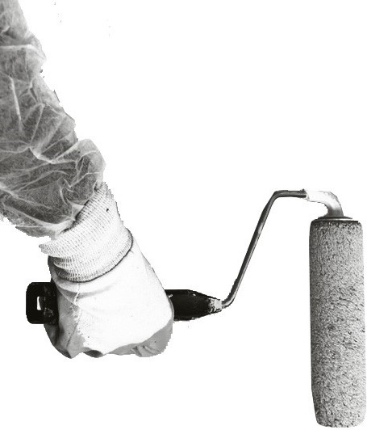

Несвідоме мистецтво вулиць.
Ця сторінка велике відчуття місця в якому перебуваю.
Цей проект – щоденник знахідок.
Щоденник несвідомого мистецтва вулиць.

Ця сторінка велике відчуття місця в якому перебуваю.
Цей проект – щоденник знахідок.
Щоденник несвідомого мистецтва вулиць.

“Іноді здається ніби всі інші, хто зі мною йдуть кудись, сидять поруч, не бачать стільки речей, стільки деталей.
Іноді мені здається, що їх світ тільки з чорного та білого кольору тому їм важко зрозуміти те, що бачу я.”
“Я нікому не відомий і маленький спостерігач. Просто той, хто відчуває відповідальність зберігати мистецтво вулиць.”
Автор: Appi Rush
Багато блукаючи містами, починаєш знайомитися з середовищем ближче, звертаєш увагу на якісь деталі, що раніше не турбували.
Найцікавіше і найважливіше не лежить на поверхності
Одна тільки вулиця, це дім десятків, а в більшості випадків, сотен людей. Той момент, що кожен з сотні може впливати на стан, на вигляд, на настрій того місця і часу, зворошує. Цей факт, робить вулиці таким динамічним середовищем, що помітивши, щось сьогодні, можна не побачити того завтра.
Найпрекрасніше та найскаженыше - мурали, що творить вулиця
Мистецтво, яке я документую, існує у звязку з середовищем. Воно не заплановане і не навмисне. Воно є продуктом різних переконань, різних людей. Люди, що сворюють його, не розуміють цього процессу і своєї участі в ньому